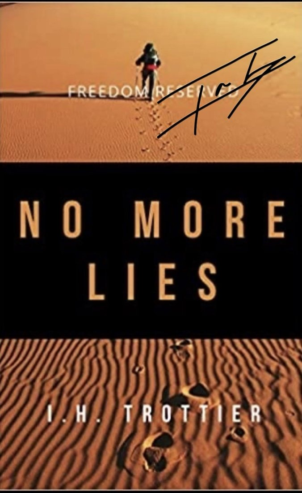

The record, the institutions, and what was reserved to the people.

Published by Bombardier Books in 2025. 430 pages. It traces John Brennan’s career from the CIA through the White House and lays out the documentary record of what was done with the country’s counterterrorism apparatus.
Signed copies ship direct from me.

My first book. The argument that the freedoms reserved to the people were being quietly transferred to institutions that answer to no one.
Zach Vorhies’ 2021 exposé of Big Tech censorship. Ian is quoted in it — the account of what happened at Doral on October 15, 2020, when President Trump called him a “prizefighter,” appears in Chapter 13, pages 158–164.